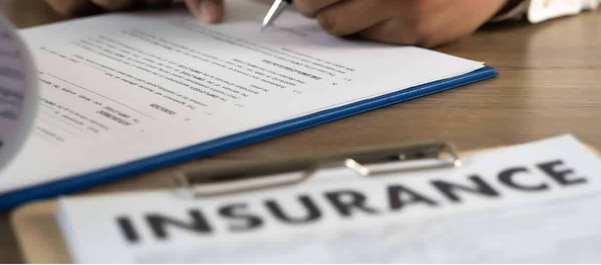

Beter verzekerd bij een andere aanbieder?
Wanneer u een excursie of activiteit op Kos boekt, hoort u soms dat het “veiliger” is om via bepaalde touroperators te boeken, omdat u dan beter verzekerd zou zijn.
Dit klopt niet.
“Beter verzekerd via een touroperator”? Dat klopt niet.
Wanneer u een excursie of activiteit op Kos boekt, hoort u soms dat het “veiliger” is om via bepaalde touroperators te boeken, omdat u dan beter verzekerd zou zijn.
Dit klopt niet.
In Griekenland is het wettelijk verplicht dat alle aanbieders van excursies en van verhuur een verzekering hebben voor hun klanten.
Of je boekt via een grote touroperator, een hoteldesk of rechtstreeks bij een lokale aanbieder: de verzekering hoort er standaard bij.

Belangrijk om te weten: veel touroperators of tussenpersonen organiseren zelf geen tours. Ze bieden bestaande tours van lokale aanbieders aan.
Laat u niet bang maken door verhalen die beweren dat boeken via een specifieke touroperator veiliger zou zijn. Het zijn vaak allemaal dezelfde aanbieders – en die zijn verplicht verzekerd voor gasten.
“Better insured via a tour operator”? That’s not true.
When you book an excursion or activity on Kos, you sometimes hear that it’s “safer” to book through certain tour operators because you’d be better insured.
That’s not true.
In Greece it is legally required that all providers of excursions and rentals have insurance for their customers.
Whether you book via a big tour operator, a hotel desk or directly with a local provider: the insurance is part of the deal.
Important to know: many tour operators or middlemen don’t run the tours themselves. They sell existing tours from local operators.
Don’t be scared by stories claiming that booking through a specific tour operator is safer. They’re often all the same providers – and they are required to insure their guests.
„Besser versichert über einen Reiseveranstalter“? Stimmt nicht.
Beim Buchen eines Ausflugs auf Kos hört man manchmal, es sei „sicherer“ über bestimmte Reiseveranstalter zu buchen, weil man dann besser versichert sei.
Das stimmt nicht.
In Griechenland ist es gesetzlich vorgeschrieben, dass alle Anbieter von Ausflügen und Vermietungen eine Versicherung für ihre Kunden haben.
Viele Reiseveranstalter organisieren die Touren nicht selbst – sie verkaufen bestehende Touren lokaler Anbieter. Die sind verpflichtet, Gäste zu versichern.
“Meglio assicurati tramite un tour operator”? Non è vero.
Quando prenoti un’escursione a Kos, a volte senti che è “più sicuro” prenotare tramite certi tour operator perché saresti meglio assicurato.
Questo non è vero.
In Grecia è obbligatorio per legge che tutti i fornitori di escursioni e noleggi abbiano un’assicurazione per i clienti.
Molti tour operator non organizzano le tour da soli: vendono tour già esistenti di operatori locali, che devono assicurare gli ospiti.
“Tur operatörü üzerinden daha iyi sigortalı”? Doğru değil.
Kos’ta tur veya aktivite rezervasyonu yaparken bazen belirli tur operatörleri üzerinden rezervasyonun “daha güvenli” olduğu, çünkü daha iyi sigortalı olacağınız söylenir.
Bu doğru değil.
Yunanistan’da tüm tur ve kiralama sağlayıcılarının müşterileri için sigorta yaptırması yasal zorunluluktur.
Birçok tur operatörü turları kendisi düzenlemez; yerel sağlayıcıların mevcut turlarını satar. Onlar da misafirleri sigortalamak zorundadır.
“¿Mejor asegurado a través de un turoperador”? No es cierto.
Al reservar una excursión en Kos, a veces oyes que es “más seguro” reservar con ciertos turoperadores porque estarías mejor asegurado.
Eso no es cierto.
En Grecia es obligatorio por ley que todos los proveedores de excursiones y alquileres tengan un seguro para sus clientes.
Muchos turoperadores no organizan las tours ellos mismos: venden tours existentes de operadores locales, que deben asegurar a los clientes.